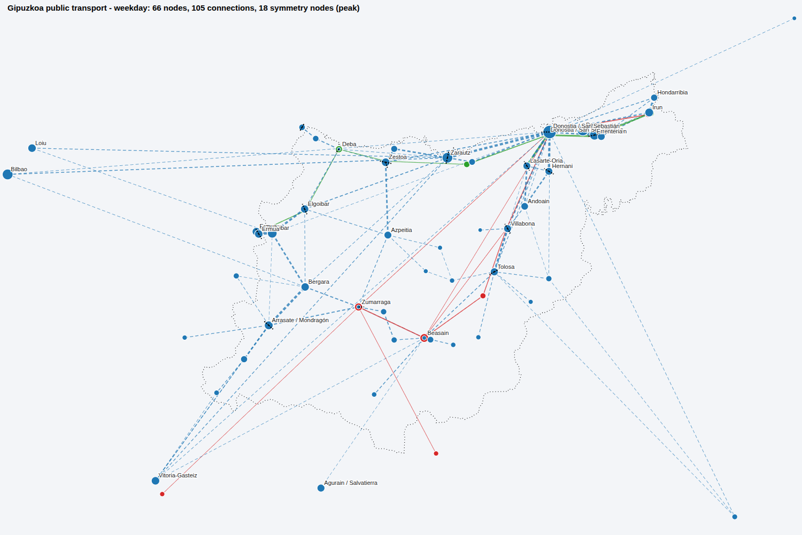
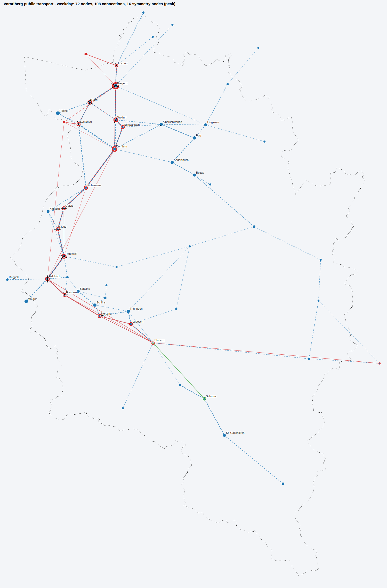
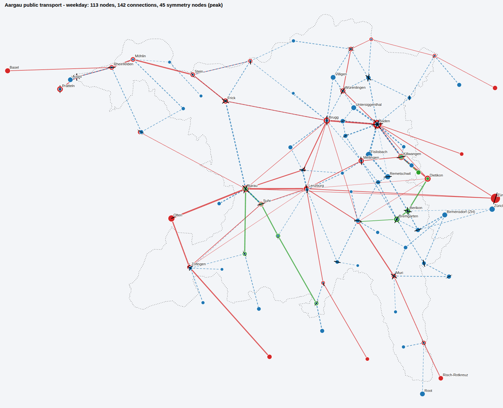
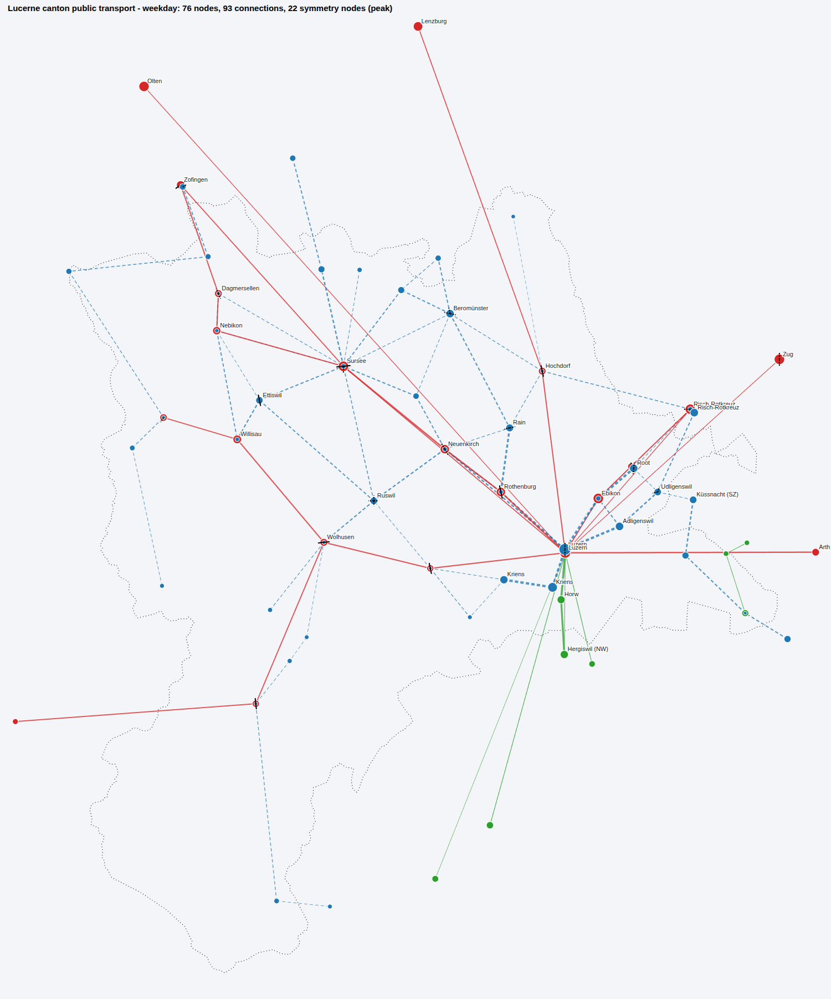
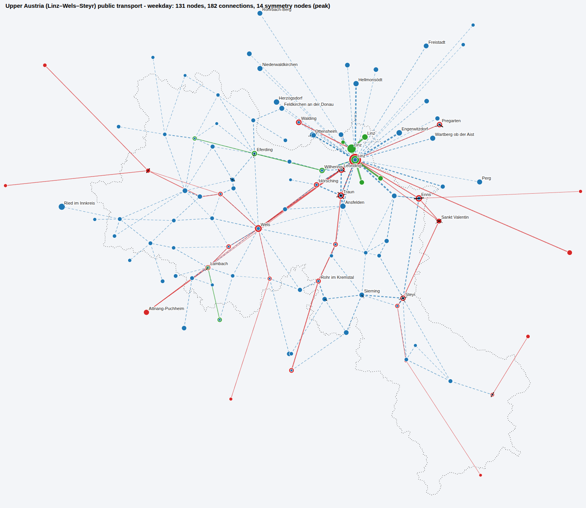

Takt / timetable network maps
Interactive maps of the regional public-transport network built from GTFS timetables: nodes, links and headways, timed connections between directions, and symmetry nodes (Taktknoten) where arrivals come just before and departures just after a common minute. Choose a region to open its map — the day and time band can be changed on the map; click a node for its symmetry diagram, connections and timetable.
national / mainline raillocal railregional bus
Regions

Gipuzkoa
Spain · Basque Country · Gipuzkoa public transport
63nodes
23symmetry nodes (peak)

Vorarlberg
Austria · Vorarlberg public transport
54nodes
24symmetry nodes (peak)

Aargau
Switzerland · Aargau public transport
87nodes
47symmetry nodes (peak)

Luzern
Switzerland · Lucerne canton public transport
60nodes
27symmetry nodes (peak)

Oberösterreich
Austria · Upper Austria (Linz–Wels–Steyr) public transport
107nodes
22symmetry nodes (peak)
Explainers
How clock-phase scheduling worksAnimation of a pulse at a hub: locals and buses arrive first, fast trains at the symmetry minute, everyone changes and leaves
Why symmetry, not just coordinationA grid of four hubs: local coordination without symmetry versus a symmetric clock-face timetable
Method and background
Network rulesHow nodes, links, connections and symmetries are defined
Literature notesTaktfahrplan / ITF review with page references
README · codeFolders, how to run the Python analysis and map generation
Papers
BMK Zielnetz2040 FachentwurfPDFFischer 2024 OeBB Zielnetz TUWienPDFFuchs etal 2025 Integrated Periodic Railway Timetabling SMTPDFHesse etal 2000 ITFPDFKraft Thalmann 2022 AnschlussoptimierungPDFPaetzold 2019 Robust Periodic Timetables Delay MgmtPDFRiedmueller Lindner 2025 Column Generation Periodic TimetablingPDFSchiewe Schoebel 2021 Integrated Optimization Public TransportPDFTeichmann 2007 ITF PlanungPDF